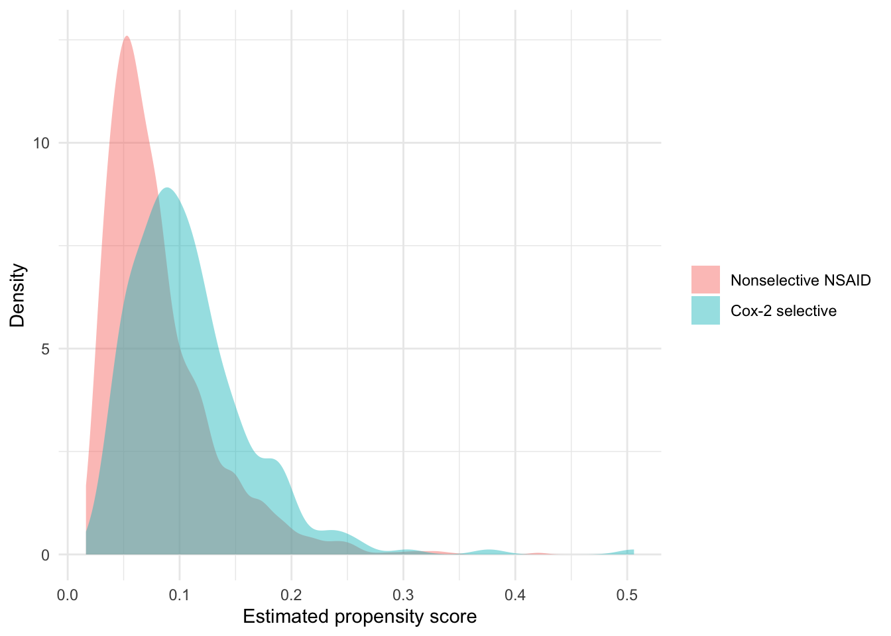
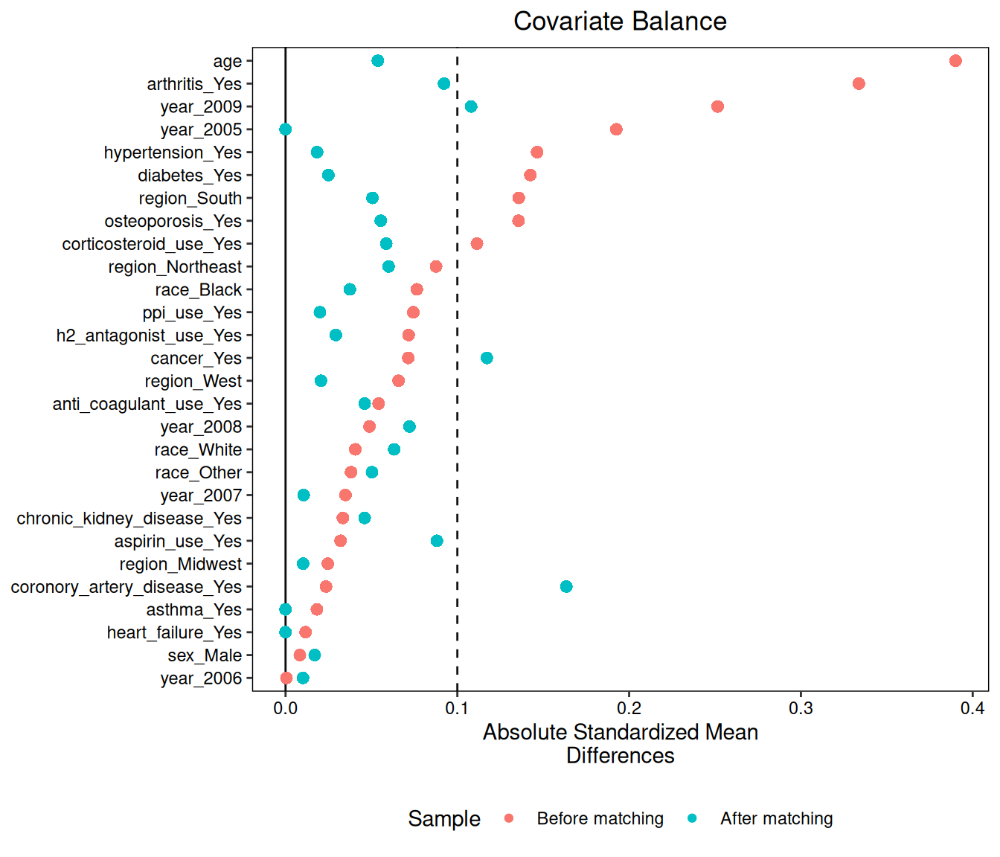

Chapter 8 Propensity scores
Chapter 7 adjusted for confounding by modeling the outcome. We wrote
down a logistic regression for pud that included the treatment
indicator and all nineteen covariates in ns_covs, then averaged its
predictions over the cohort twice. It worked, but notice how much weight
that single model was carrying: nineteen covariates and their functional
forms, all of it resting on 288 ulcer cases. This chapter
takes a second route to the same question, and it moves the modeling
burden to the other side of the problem. Instead of modeling how
covariates produce the outcome, we model how covariates produce
treatment, and then use that one fitted probability — rather than the
nineteen covariates themselves — to make the arms comparable. In many
studies the appeal is arithmetic, because exposure is far more common
than the outcome and the treatment model therefore has more information
to work with; here, with 240 Cox-2 initiators against
288 cases, the two are comparably rare and the appeal is
conceptual instead. The gain is a separation between the work of making
the groups comparable and the work of estimating an effect.
8.1 One number that summarizes confounding
The propensity score is the probability of receiving treatment given the measured covariates, \[e(L) = P(A = 1 \mid L),\] a single number between 0 and 1 attached to each patient. In our cohort it is the probability that a patient with this age, sex, region, comorbidity profile, and medication history was started on a Cox-2 selective inhibitor rather than a nonselective NSAID.
What makes this useful is a result of Rosenbaum and Rubin (1983): the propensity score is a balancing score. Among patients who share the same value of \(e(L)\), the distribution of \(L\) itself is the same in the treated and the untreated. Two patients with a propensity score of 0.20 may look nothing alike — one old with arthritis and no other illness, the other younger with diabetes and hypertension — but if we collect everyone whose score is 0.20, the treated members of that collection and the untreated members will have, on average, the same age distribution, the same arthritis prevalence, the same steroid use, and so on for every covariate that went into the score. Within a level of the score, treatment is as though randomized with respect to those covariates.
The consequence for us is the second half of the theorem. If conditional exchangeability holds given the full covariate vector \(L\) — Chapter 3’s assumption, for which Chapter 5’s diagram is the argument — then it also holds given \(e(L)\) alone. So we may condition on a single scalar in place of nineteen variables without loss, reducing nineteen dimensions of confounding to one number.
Two cautions belong here at the outset. First, the propensity score is a nuisance parameter: a patient’s probability of receiving a Cox-2 inhibitor is of no interest in itself, and the coefficients of the treatment model should not be interpreted causally, since the score serves only as something to condition on. Second, the balancing property holds for the true score, which we do not observe. We estimate it, and the justification for the estimate rests less on the model being correctly specified than on its demonstrably balancing the covariates, which is something we can check directly and do check below.
8.2 Estimating the score
Estimating a propensity score is a logistic regression like any other,
so the function that does it is short. It fits the treatment model and
returns the data with the fitted probabilities attached as a column
named ps, which is what every method later in the chapter consumes.
est_ps <- function(data, treat_model) {
fit <- glm(treat_model, family = binomial(), data = data)
data |> mutate(ps = predict(fit, type = "response"))
}predict() with type = "response" is what puts the predictions on the
probability scale rather than the log-odds scale; without it we would
get linear predictors, which balance just as well but are harder to
read. That code and the matching function below live in
R/propensity.R, so from here on we source it.
source("R/propensity.R")
ps_model <- reformulate(ns_covs, "cox2_init")
ns_ps <- est_ps(ns, ps_model) |> mutate(id = row_number())
ns_ps |>
group_by(cox2_init) |>
summarise(n = n(), mean_ps = mean(ps), min = min(ps), max = max(ps),
.groups = "drop") |>
knitr::kable(digits = 3)| cox2_init | n | mean_ps | min | max |
|---|---|---|---|---|
| 0 | 2642 | 0.081 | 0.016 | 0.423 |
| 1 | 240 | 0.109 | 0.029 | 0.506 |
Notice the formula. reformulate(ns_covs, "cox2_init") puts treatment
on the left and the covariates on the right, the mirror image of
Chapter 7’s outcome model and with no mention of pud anywhere. This is
more than a technicality, because the model can be built, inspected,
and revised without ever looking at the outcome, so it cannot be tuned,
however unconsciously, toward an answer we like. Propensity-score
analysis therefore restores something outcome modeling gives up: a
design stage, prior to and separate from analysis, in which we work
only with treatment and covariates, and which is as close as an
observational study comes to specifying a randomization
scheme. Rubin (2008) makes this the central argument for propensity
scores — that in observational work design trumps analysis, and that the
discipline of settling the comparison before the outcome is ever
examined is most of what the score is for.
The fitted scores average 0.109 in the Cox-2 arm against 0.081 among nonselective initiators, straddling the cohort-wide treatment prevalence of 8.3%. That separation is the confounding of Chapter 6’s Table 1, now expressed as one number: the model can distinguish the arms because the arms genuinely differ. Of more interest is how much the two distributions overlap.
ggplot(ns_ps, aes(x = ps, fill = factor(cox2_init))) +
geom_density(alpha = 0.45, colour = NA) +
scale_fill_discrete(name = NULL,
labels = c("Nonselective NSAID", "Cox-2 selective")) +
labs(x = "Estimated propensity score", y = "Density") +
theme_minimal()
This plot is where the positivity assumption becomes visible, and it is the first thing to examine before any propensity-score analysis: the region of the score occupied by treated patients should also be occupied by untreated patients, and conversely, since conditioning on the score is informative only where both arms are represented. Formally the ranges nest: the count of nonselective initiators above the highest treated score is 0, and the count of Cox-2 initiators below the lowest untreated score is 0. The tails, however, are where the assumption becomes thin. The bottom percentile of the score holds 29 patients, of whom 0 started a Cox-2 inhibitor; the top percentile holds 29 patients, of whom 5 did. The left tail therefore contains patients for whom we have almost no information about what a Cox-2 inhibitor would have done, and the right tail is sparse in the other direction. Chapter 7’s standardization encountered the same problem, but silently, extrapolating wherever it had to. Here the difficulty can be seen on a plot, which is one reason to estimate a propensity score even when one intends to adjust in some other way.
8.3 Stratification
The most direct use of a balancing score is to stratify on it. If treated and untreated patients within a level of the score are comparable, then a risk difference computed inside a narrow band of the score is unconfounded, and we can pool those within-band differences into one estimate. Bands of exactly equal score would be empty, so in practice we cut the score into quantiles — quintiles, conventionally.
strata <- ns_ps |>
mutate(ps_q = ntile(ps, 5)) |>
group_by(ps_q) |>
summarise(
n_treat = sum(cox2_init),
n_ctrl = sum(1 - cox2_init),
risk1 = mean(pud[cox2_init == 1]),
risk0 = mean(pud[cox2_init == 0]),
rd = risk1 - risk0,
var_rd = risk1 * (1 - risk1) / n_treat + risk0 * (1 - risk0) / n_ctrl,
.groups = "drop"
)
strata |> select(-var_rd) |> knitr::kable(digits = 3)| ps_q | n_treat | n_ctrl | risk1 | risk0 | rd |
|---|---|---|---|---|---|
| 1 | 13 | 564 | 0.077 | 0.035 | 0.041 |
| 2 | 29 | 548 | 0.034 | 0.058 | -0.024 |
| 3 | 36 | 540 | 0.028 | 0.078 | -0.050 |
| 4 | 77 | 499 | 0.130 | 0.106 | 0.024 |
| 5 | 85 | 491 | 0.200 | 0.226 | -0.026 |
Read down the risk0 column first. Baseline risk climbs steadily from
3.5% in the lowest-propensity
quintile to 22.6% in the highest,
which is the confounding made concrete: the covariates that pushed
physicians toward the Cox-2 drug are the same covariates that predict
ulcers. Read the n_treat column next and the cost of stratification
becomes clear. The lowest quintile holds only
13 Cox-2 initiators against
564 nonselective ones, so its risk difference of
+4.1 percentage points rests on a
handful of patients and should not be interpreted on its own.
Pooling is therefore necessary, and the choice of how to pool determines the estimand. Weighting each stratum by the inverse of its variance — precision weighting, the logic behind the Mantel–Haenszel estimator — gives the most statistically efficient combination:
## rd_precision_weighted se
## -0.02074445 0.01777657That is -2.1 percentage points with a standard error of 1.8, so a 95% interval running roughly -5.6 to +1.4 points. Weighting each stratum by its size instead gives -0.7 points, considerably closer to Chapter 7’s standardized risk difference of -0.6. Neither is wrong, but they answer different questions. The size-weighted average is standardization to the cohort’s own covariate distribution, and so estimates the ATE of Chapter 3. The precision-weighted average is standardized to a population defined by where the information happens to be, which coincides with the ATE only if the risk difference is constant across strata. When effects vary across strata, efficiency and interpretability diverge, and it is worth stating which of the two has been chosen.
Either way, both sit on the protective side of the null while the crude risk difference was +2.7 points, and both have intervals wide enough to include no effect.
Whether the stratification balances the covariates can be checked
directly. Because the score is a balancing score, covariates should be
similar between arms within a stratum even though they differ sharply
overall. We apply Chapter 2’s table1_categorical() to the top quintile.
source("R/table1.R")
top_q <- ns_ps |> mutate(ps_q = ntile(ps, 5)) |> filter(ps_q == 5)
table1_categorical(top_q, c("arthritis", "corticosteroid_use", "hypertension"),
by = "cox2_init") |>
knitr::kable()| variable | level | 0 | 1 |
|---|---|---|---|
| arthritis | No | 109 (22.2%) | 24 (28.2%) |
| arthritis | Yes | 382 (77.8%) | 61 (71.8%) |
| corticosteroid_use | No | 478 (97.4%) | 80 (94.1%) |
| corticosteroid_use | Yes | 13 (2.6%) | 5 (5.9%) |
| hypertension | No | 289 (58.9%) | 56 (65.9%) |
| hypertension | Yes | 202 (41.1%) | 29 (34.1%) |
| variable | 0 | 1 |
|---|---|---|
| age | 63.2 (13.5) | 62.1 (13.7) |
The balance is much improved. Across the whole cohort, Cox-2 initiators are 6.1 years older on average and 17 percentage points more likely to carry an arthritis diagnosis. Within the top propensity quintile the age gap has shrunk to 1.1 years, and in the opposite direction, while the arthritis, steroid, and hypertension percentages are within a few points of each other. Both arms of this stratum consist of high-propensity patients and are therefore older and more often arthritic, so much of what distinguished the arms overall has been absorbed into the stratum itself.
Balance within quintiles is good but necessarily imperfect. Patients with scores of 0.12 and 0.50 fall in the same top quintile despite differing considerably, so some confounding remains within each band; Cochran’s (1968) classic result is that five strata remove roughly 90% of the bias from a single continuous confounder, leaving the remainder. Matching addresses that residual by making comparisons between individuals rather than within bands.
8.4 Matching
Matching pairs each treated patient with an untreated patient whose propensity score is close, and analyzes the paired sample. The version below is the simplest form that remains defensible: greedy 1:1 nearest-neighbor matching without replacement, within a caliper.
# Greedy 1:1 nearest-neighbor matching without replacement.
ps_match <- function(data, treat, ps = "ps", caliper = 0.05) {
treated <- data |> filter(.data[[treat]] == 1) |> arrange(desc(.data[[ps]]))
controls <- data |> filter(.data[[treat]] == 0)
used <- rep(FALSE, nrow(controls))
pairs <- vector("list", nrow(treated))
for (i in seq_len(nrow(treated))) {
dist <- abs(controls[[ps]] - treated[[ps]][i])
dist[used] <- Inf
j <- which.min(dist)
if (dist[j] <= caliper) {
used[j] <- TRUE
pairs[[i]] <- bind_rows(treated[i, ], controls[j, ])
}
}
bind_rows(pairs, .id = "pair_id")
}Four decisions are encoded in those lines. Greedy means we take
treated patients one at a time and give each its closest available
control, never revisiting an earlier choice; it is not guaranteed to
minimize total distance the way optimal matching would, but it is
transparent and fast. Without replacement is enforced by the used
vector, which sets already-matched controls to infinite distance so no
control appears twice — keeping the paired analysis honest at the cost
of using fewer controls. The arrange(desc()) orders treated
patients from the highest score down, so the hardest patients to match,
the ones out at the sparse end of the distribution, get first pick of
the control pool. The caliper sets a limit on how poor a match will be
accepted: if the nearest available control differs by more than 0.05 on
the propensity scale, that treated patient is left unmatched rather than
paired with an implausible comparator. Unmatched patients are how a
matched analysis registers a positivity problem rather than
extrapolating past one.
matched <- ps_match(ns_ps, treat = "cox2_init", caliper = 0.05)
n_pairs <- n_distinct(matched$pair_id)
c(pairs = n_pairs, treated_available = sum(ns_ps$cox2_init),
unmatched = sum(ns_ps$cox2_init) - n_pairs)## pairs treated_available unmatched
## 239 240 1The matching yields 239 pairs from 240 Cox-2 initiators, a shortfall of 1: at the extreme right of the density plot there is a treated patient for whom no nonselective initiator falls inside the caliper. The loss is small here because the control pool is roughly 11 times the size of the treated group; in a cohort with a more common exposure the loss would be larger and more consequential.
The important check is on balance. The cobalt package computes
standardized
mean differences before and after matching and plots them. We pass the
full cohort along with a 0/1 weight flagging which rows survived
matching, which lets bal.tab() compute both columns at once.
library(cobalt)
ns_ps <- ns_ps |> mutate(matched_wt = as.integer(id %in% matched$id))
bt <- bal.tab(ps_model, data = ns_ps, weights = ns_ps$matched_wt,
estimand = "ATT", un = TRUE, binary = "std",
thresholds = c(m = 0.1))
bt## Balance Measures
## Type Diff.Un Diff.Adj M.Threshold
## age Contin. 0.3901 -0.0537 Balanced, <0.1
## sex_Male Binary 0.0083 0.0170 Balanced, <0.1
## race_White Binary 0.0406 -0.0633 Balanced, <0.1
## race_Black Binary -0.0765 0.0374 Balanced, <0.1
## race_Other Binary 0.0381 0.0503 Balanced, <0.1
## region_Northeast Binary -0.0876 0.0600 Balanced, <0.1
## region_Midwest Binary -0.0246 -0.0102 Balanced, <0.1
## region_South Binary 0.1357 -0.0506 Balanced, <0.1
## region_West Binary -0.0658 0.0206 Balanced, <0.1
## year_2005 Binary 0.1925 0.0000 Balanced, <0.1
## year_2006 Binary -0.0005 0.0102 Balanced, <0.1
## year_2007 Binary -0.0349 0.0105 Balanced, <0.1
## year_2008 Binary 0.0489 0.0721 Balanced, <0.1
## year_2009 Binary -0.2515 -0.1080 Not Balanced, >0.1
## arthritis_Yes Binary 0.3338 -0.0923 Balanced, <0.1
## asthma_Yes Binary 0.0183 0.0000 Balanced, <0.1
## cancer_Yes Binary -0.0714 0.1172 Not Balanced, >0.1
## chronic_kidney_disease_Yes Binary 0.0334 -0.0460 Balanced, <0.1
## heart_failure_Yes Binary -0.0117 0.0000 Balanced, <0.1
## diabetes_Yes Binary 0.1425 0.0250 Balanced, <0.1
## hypertension_Yes Binary 0.1464 0.0183 Balanced, <0.1
## coronory_artery_disease_Yes Binary -0.0236 -0.1634 Not Balanced, >0.1
## osteoporosis_Yes Binary 0.1356 0.0555 Balanced, <0.1
## corticosteroid_use_Yes Binary 0.1114 0.0586 Balanced, <0.1
## aspirin_use_Yes Binary 0.0320 0.0881 Balanced, <0.1
## anti_coagulant_use_Yes Binary 0.0542 0.0460 Balanced, <0.1
## ppi_use_Yes Binary 0.0744 0.0200 Balanced, <0.1
## h2_antagonist_use_Yes Binary 0.0717 0.0293 Balanced, <0.1
##
## Balance tally for mean differences
## count
## Balanced, <0.1 25
## Not Balanced, >0.1 3
##
## Variable with the greatest mean difference
## Variable Diff.Adj M.Threshold
## coronory_artery_disease_Yes -0.1634 Not Balanced, >0.1
##
## Effective sample sizes
## Control Treated
## Unadjusted 2642 240
## Adjusted 239 239love.plot(bt, abs = TRUE, var.order = "unadjusted",
thresholds = c(m = 0.1),
sample.names = c("Before matching", "After matching")) +
theme(legend.position = "bottom")
The love plot is the standard way to present this, and it reads at a glance: each covariate is a row, absolute standardized mean difference runs along the horizontal axis, and the dashed line at 0.1 marks the conventional threshold below which imbalance is usually called negligible. Before matching, 9 of the 28 terms exceed that line, led by age at 0.39. After matching, most collapse toward zero and age falls to 0.05; the average absolute standardized difference drops from 0.095 to 0.047.
The exceptions deserve attention rather than concealment, since 3 terms still sit above the threshold after matching, the worst of them the coronary artery disease indicator at 0.16. The counts, however, are informative: coronary artery disease appears in 9 matched controls and 4 matched Cox-2 initiators. A gap of 5 patients out of 239 is a raw difference of about 2.1 percentage points; it looks large as a standardized difference only because dividing by the standard deviation of a rare binary variable inflates small absolute differences. This is a general hazard of reading the 0.1 rule mechanically for rare covariates, and the remedy is to look at both the standardized and the raw scale before deciding whether an imbalance is worth acting on.
With balance established, the effect estimate is a comparison of two proportions in the matched sample.
matched |>
group_by(cox2_init) |>
summarise(n = n(), cases = sum(pud), risk = mean(pud), .groups = "drop") |>
knitr::kable(digits = 3)| cox2_init | n | cases | risk |
|---|---|---|---|
| 0 | 239 | 40 | 0.167 |
| 1 | 239 | 30 | 0.126 |
The matched risk difference is -4.2 percentage points, 12.6% against 16.7%, with a risk ratio of 0.75. Because the sample is paired, the standard error should respect the pairing: we take the within-pair difference in outcomes for each of the 239 pairs and compute the standard error of their mean, 3.1 percentage points, giving an interval of roughly -10.3 to +1.9 points. It comfortably includes zero.
That point estimate is further from the null than the -0.6 points standardization gave us, and two things account for the gap. The first is precision: we discarded 2404 patients, so the matched interval is much wider than Chapter 7’s and the point estimate correspondingly less stable. The second is that matching estimates a different estimand. Every treated patient is kept and controls are recruited to resemble them, so the covariate distribution we have averaged over is that of the Cox-2 initiators — the ATT of Chapter 3, not the ATE. Given that the Cox-2 arm is older and sicker, and therefore at higher baseline risk, there is no reason to expect the ATT and the ATE to agree, and the matched estimate should not be read as a failed replication of the standardized one. It answers a related question, and in many settings the more clinically relevant one: what the drug did for the patients who actually received it.
8.5 Choosing the PS model
Everything above depends on which variables enter ps_model, and the
selection rule is not to include whatever predicts treatment best.
Judging a propensity-score model by its c-statistic is misleading,
because a model that separated the arms perfectly would push the two
densities apart until they no longer overlapped, removing the
comparability the method depends on. A propensity-score model is
adequate if it produces balance and preserves overlap, which is what the
love plot and the density plot were used to assess.
Chapter 5’s diagram guides what belongs in the model. Confounders — common causes of treatment and outcome, such as age, arthritis, and steroid use — must be included. Pure outcome predictors, variables that affect the outcome but not treatment, should generally be included as well, since they cannot introduce bias and conditioning on them improves precision. The variables to leave out are instruments: variables that influence treatment but have no effect on the outcome except through treatment, of which physician prescribing preference is the standard example. Including an instrument improves the fit of the treatment model, and that is why it causes trouble: it spreads the propensity scores apart, reduces overlap, inflates the variance of the estimate, and can amplify bias from unmeasured confounding. As in Chapter 5, colliders and variables on the causal pathway from treatment to outcome are excluded; the propensity score provides no exemption from the rules for reading a DAG.
That last consequence has a name of its own. Bias amplification refers to more than a loss of precision: conditioning on an instrument-like variable can make the bias from an unmeasured confounder larger than it was before adjustment. The instrument accounts for the part of the variation in treatment that was unrelated to the confounder, so the residual variation is more heavily loaded with the unmeasured confounder, and the estimate then contrasts patients who differ more on \(U\) than the full cohort did. Brookhart et al. (2006, AJE) demonstrated the effect in simulation, which is why advice to include everything that predicts treatment can do real damage rather than merely waste degrees of freedom. The opposite extreme is also defensible in the right setting: in large claims databases, high-dimensional proxy adjustment — the hd-PS algorithm of Schneeweiss et al. (2009) — screens thousands of diagnosis and dispensing codes for empirical proxies of unmeasured confounders and selects a few hundred, on the argument that no investigator can enumerate them by hand. That approach is beyond this book’s scope, but it is where the course’s variable-selection session lands, and the tension between it and the diagram-first rule above is a real one rather than a misunderstanding.
Two habits follow. First, choose the covariate set from substantive
knowledge and the diagram before looking at the outcome, which is what
the design stage makes possible. Second, when a variable’s role is
genuinely unclear, include it if it plausibly affects the outcome and
exclude it if it plausibly affects only treatment, and report the
analysis both ways. ns_covs was assembled on that reasoning, and its
arguable members, among them ppi_use and h2_antagonist_use from
Chapter 7’s exercises, are the ones worth varying.
8.6 Exercises
- Re-estimate the propensity score with
arthritisremoved from the covariate list, rematch, and compare the two love plots. How much arthritis imbalance survives in the matched sample, and do the other covariates stay balanced? Explain why leaving out a strong confounder can still yield a matched sample that looks acceptable on the remaining variables. - Rerun
ps_match()withcaliper = 0.01and report the number of pairs. How many treated patients are lost relative to the 0.05 caliper? Compute the mean and maximum within-pair difference in propensity score under the looser caliper, and use those numbers to explain why tightening it costs so little here — then describe the cohort in which it would cost a great deal. - Build one table comparing three estimates of the effect of Cox-2
initiation on peptic ulcer disease: the precision-weighted stratified
risk difference, the matched risk difference, and the standardized
risk difference from
standardize()inR/standardize.R(usen_boot = 200and a fixed seed). Report each with an interval. State which estimand each one targets and rank them by precision, then say which you would report as the primary analysis and why.